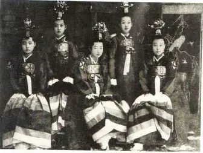
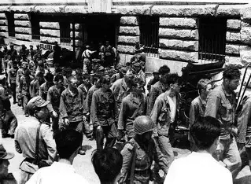

A história da Coreia começou há milhares de anos com antigos reinos que ocuparam a Península Coreana.
Entre eles, destacaram-se Goguryeo, Baekje e Silla, que contribuíram para a formação da cultura e da identidade coreana.
Mais tarde, surgiram as dinastias Goryeo e Joseon, períodos marcados pelo desenvolvimento da arte, da ciência e da educação.
Em 1910, a Coreia foi anexada pelo Japão e permaneceu sob domínio japonês até o fim da Segunda Guerra Mundial, em 1945.
Após a guerra, o território foi dividido em duas partes: a Coreia do Norte, apoiada pela União Soviética, e a Coreia do Sul, apoiada pelos Estados Unidos.
Em 1950, teve início a Guerra da Coreia, um conflito que durou três anos e causou grande destruição.
Após o armistício de 1953, a divisão entre Norte e Sul foi mantida.
Nas décadas seguintes, a Coreia do Sul passou por um rápido crescimento econômico e tecnológico, tornando-se uma das maiores economias do mundo.
Atualmente, o país é conhecido por sua inovação, qualidade de vida e forte influência cultural por meio do cinema, das séries e do K-Pop.

